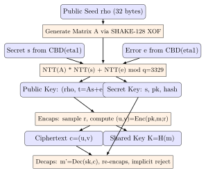
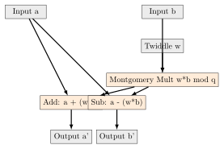

Chapter 16: Post-Quantum Cryptography Hardware¶
Note: NIST finalized four post-quantum standards in August 2024: FIPS 203 (ML-KEM), FIPS 204 (ML-DSA), FIPS 205 (SLH-DSA), FIPS 206 (FN-DSA). NSA CNSA 2.0 mandates migration to PQC for all National Security Systems by 2033.
16.1 Quantum Threat to Classical Cryptography¶
Shor’s algorithm (1994) solves integer factorization in polynomial time \(O(n^3)\), breaking RSA-2048 ( 4096 logical qubits needed) and ECDSA P-256 ( 2330 qubits). Grover’s algorithm (1996) provides quadratic speedup, halving symmetric key strength: AES-128 post-quantum = 64 bits, AES-256 post-quantum = 128 bits.
| Primitive | Classical Security | Post-Quantum | Action |
|---|---|---|---|
| RSA-2048 | 112 bits | Broken (Shor) | Replace immediately |
| ECDSA P-256 | 128 bits | Broken (Shor) | Replace immediately |
| ECDH P-384 | 192 bits | Broken (Shor) | Replace immediately |
| AES-128 | 128 bits | 64 bits (Grover) | Upgrade to AES-256 |
| AES-256 | 256 bits | 128 bits (Grover) | Acceptable |
| SHA-256 | 256 bits | 128 bits (Grover) | Acceptable |
| ML-KEM-768 | 178 bits | 128 bits | NIST FIPS 203 approved |
| ML-DSA-44 | 128 bits | 128 bits | NIST FIPS 204 approved |
16.2 NIST PQC Standards – FIPS 203/204/205/206¶
| FIPS | Algorithm | Base Problem | Type | Key Sizes |
|---|---|---|---|---|
| FIPS 203 | ML-KEM (Kyber) | Module-LWE | KEM | 800B/1184B/1568B |
| FIPS 204 | ML-DSA (Dilithium) | Module-LWE+SIS | Signature | 1312/1952/2592B |
| FIPS 205 | SLH-DSA (SPHINCS+) | Hash function | Signature | 32/48/64B sk |
| FIPS 206 | FN-DSA (Falcon) | NTRU lattice | Signature | 897B/1793B |
16.3 ML-KEM (Kyber) – Module Learning With Errors KEM¶
ML-KEM is based on the hardness of the Module Learning With Errors (MLWE) problem over the polynomial ring \(R = \mathbb{Z}_q[x]/(x^{256}+1)\) with \(q = 3329\).
16.3.1 Parameter Sets¶
-
ML-KEM-512: \(k=2\), \(\eta_1=3\), \(\eta_2=2\). Security level 1 (AES-128 equivalent). Public key 800 bytes, secret key 1632 bytes, ciphertext 768 bytes.
-
ML-KEM-768: \(k=3\), \(\eta_1=2\), \(\eta_2=2\). Security level 3 (AES-192 equivalent). Public key 1184 bytes, secret key 2400 bytes, ciphertext 1088 bytes. CNSA 2.0 recommended.
-
ML-KEM-1024: \(k=4\), \(\eta_1=2\), \(\eta_2=2\). Security level 5 (AES-256 equivalent). Public key 1568 bytes, secret key 3168 bytes, ciphertext 1568 bytes.
16.3.2 Number Theoretic Transform (NTT)¶
The NTT is the key performance-critical operation in ML-KEM. It transforms polynomial multiplication from \(O(n^2)\) to \(O(n \log n)\) using the prime field \(\mathbb{Z}_{3329}\).
NTT butterfly unit computes: \((a, b) = (a + \omega \cdot b \bmod q, \; a - \omega \cdot b \bmod q)\)
where \(\omega\) is a root of unity modulo \(q = 3329\), and modular reduction uses Montgomery or Barrett methods.
Montgomery reduction: given \(t = a \cdot b\), compute \(t \cdot R^{-1} \bmod q\) where \(R = 2^{16}\) for \(q = 3329\). Uses only additions and shifts – no division.
16.3.3 ML-KEM Operations¶
-
KeyGen: Sample matrix \(A \in R_q^{k \times k}\) from seed \(\rho\). Sample secret \(s\), error \(e\) from centered binomial distribution. Public key \(pk = As+e\).
-
Encaps: Sample \(r\) from seed. Compute \(c = \text{Enc}(pk, m; r)\). Return ciphertext \(c = (u, v)\) and shared key \(K = H(m)\).
-
Decaps: Compute \(m' = \text{Dec}(sk, c)\). Re-encapsulate: \(K = H(m')\) if valid, else \(K = H(z \| c)\) (implicit rejection).

16.4 NTT Butterfly Unit Hardware¶

16.5 ML-DSA (Dilithium) Hardware¶
ML-DSA (FIPS 204, based on Dilithium) uses Module-LWE and Module-SIS problems with rejection sampling for signature generation.
| Level | Variant | PK size | SK size | Sig size | Security |
|---|---|---|---|---|---|
| NIST 2 | ML-DSA-44 | 1,312 B | 2,528 B | 2,420 B | 128 bits |
| NIST 3 | ML-DSA-65 | 1,952 B | 4,032 B | 3,293 B | 192 bits |
| NIST 5 | ML-DSA-87 | 2,592 B | 4,896 B | 4,595 B | 256 bits |
16.6 SLH-DSA (SPHINCS+) Hardware¶
SLH-DSA (FIPS 205) is stateless hash-based signature scheme using FORS (Forest of Random Subsets) and Hypertree (HT) structure. No lattice mathematics – all operations are hash function calls (SHAKE-256 or SHA-256 variants).
| Variant | Hash | PK | Sig size | Security |
|---|---|---|---|---|
| SLH-DSA-SHAKE-128s | SHAKE-256 | 32 B | 7,856 B | 128 bits |
| SLH-DSA-SHAKE-128f | SHAKE-256 | 32 B | 17,088 B | 128 bits (fast) |
| SLH-DSA-SHAKE-192s | SHAKE-256 | 48 B | 16,224 B | 192 bits |
| SLH-DSA-SHAKE-256s | SHAKE-256 | 64 B | 29,792 B | 256 bits |
| SLH-DSA-SHA2-128s | SHA-256 | 32 B | 7,856 B | 128 bits |
Warning: SLH-DSA signatures are very large (7,856–49,856 bytes) compared to ECDSA (64 bytes) or ML-DSA (2,420–4,595 bytes). For bandwidth-constrained applications (V2X BSM at 5.9 GHz, TLS handshake), SLH-DSA is impractical. ML-DSA is preferred for general-purpose signatures; SLH-DSA is recommended only where stateless signatures are required and bandwidth is not a concern (e.g., firmware signing with offline key).
16.7 FN-DSA (Falcon) Hardware Challenges¶
FN-DSA (FIPS 206, Falcon) uses NTRU lattice with Fast Fourier Sampling (FFS) for compact signatures (897 bytes for Falcon-512, 1793 bytes for Falcon-1024). However, it is hardware-unfriendly:
-
Gaussian sampler: Requires discrete Gaussian sampling over \(\mathbb{Z}\). Hardware implementation requires constant-time floating-point or fixed-point arithmetic to prevent timing side-channels.
-
FFT-based NTRU solver: Uses complex floating-point FFT for key generation. Not suitable for resource-constrained hardware without dedicated FPU.
-
Side-channel vulnerability: Gaussian sampler timing leaks discovered in early Falcon implementations (Guerreau et al. 2022, USENIX Security). Constant-time implementation adds 20–40% overhead.
16.8 Hybrid KEM: X-Wing and ECDH+ML-KEM¶
Hybrid KEMs combine classical and post-quantum algorithms to maintain security against both classical and quantum adversaries during the transition period:
-
X-Wing: X25519 + ML-KEM-768. IETF draft-connolly-cfrg-xwing-kem. Combined shared secret \(= (\text{X25519\_ss} \| \text{MLKEM768\_ss} \| \text{X25519\_pk} \| \text{MLKEM768\_pk})\). Security: classical OR quantum adversary must break both components.
-
TLS 1.3 Hybrid: ECDH P-256 + ML-KEM-768 via NamedGroup extension. Google Chrome + Cloudflare deployed in 2023 (CECPQ2). BoringSSL, AWS-LC support.
-
Dual-PRF combiner: \(K = \text{PRF}(K_1, K_2)\) where \(K_1\) = classical KEM output, \(K_2\) = PQ KEM output. Provides security if either KEM is secure.
16.9 FPGA PQC Implementation Results¶
| Algorithm | FPGA | LUTs | FFs | BRAMs | DSPs | MHz |
|---|---|---|---|---|---|---|
| ML-KEM-512 KeyGen | Artix-7 XC7A100T | 4,500 | 3,200 | 4 | 8 | 200 |
| ML-KEM-768 KeyGen | Artix-7 XC7A100T | 5,800 | 4,100 | 6 | 12 | 200 |
| ML-KEM-1024 KeyGen | Artix-7 XC7A200T | 7,200 | 5,000 | 8 | 16 | 185 |
| ML-KEM-768 KeyGen | UltraScale+ XCKU5P | 2,800 | 2,100 | 4 | 8 | 300 |
| ML-KEM-768 Encaps | Artix-7 XC7A100T | 5,200 | 3,800 | 6 | 10 | 200 |
| ML-DSA-44 Sign | Artix-7 XC7A200T | 9,500 | 7,000 | 10 | 20 | 150 |
| ML-DSA-65 Sign | UltraScale+ XCKU5P | 6,800 | 5,200 | 8 | 16 | 200 |
| SLH-DSA-128s Sign | Artix-7 XC7A200T | 3,200 | 2,400 | 4 | 0 | 250 |
| NTT butterfly unit | Artix-7 (1x BU) | 120 | 80 | 0 | 1 | 200 |
Tip: ML-KEM on Artix-7 achieves 1 Mbps keygen throughput at 200 MHz. The NTT butterfly unit uses a single DSP48E1 for the Montgomery multiplication, achieving 200 MHz clock rate. For ML-KEM-768 on UltraScale+, 300 MHz operation with 2,800 LUTs enables 3.5 Mbps keygen – 3.5x faster than Artix-7 due to higher DSP efficiency and lower routing delay.
16.10 ASIC PQC Implementation¶
| Algorithm | Process | Area | Power | Performance |
|---|---|---|---|---|
| ML-KEM-768 KeyGen | Samsung 28nm | 0.15 mm2 | 1.5 mW | 200 MHz, 2 Mbps |
| ML-KEM-768 KeyGen | TSMC 7nm | 0.02 mm2 | 0.2 mW | 500 MHz, 5 Mbps |
| ML-DSA-44 Sign | Samsung 28nm | 0.35 mm2 | 3.5 mW | 200 MHz, 50k sign/s |
| SLH-DSA-128s Sign | TSMC 7nm | 0.08 mm2 | 0.8 mW | 300 MHz, 10k sign/s |
| IBM Z16 Dilithium HW | IBM 5nm | N/A | N/A | 2x faster vs SW |
| NXP SE051W ML-KEM | NXP 40nm | N/A | 3 mW | I2C 400 kHz IF |
16.11 Side-Channel Attacks on PQC¶
PQC algorithms introduce new side-channel attack surfaces:
-
NTT timing leaks: Non-constant-time modular reduction in NTT. Barrett reduction requires a branch or multiply-accumulate that leaks via power trace. Montgomery reduction is branch-free but may still leak via operand-dependent power consumption.
-
ML-DSA rejection sampling: The signing loop repeats if the generated signature fails the norm check (probability 30%). Repeated iterations leak timing information. Mitigation: constant-time norm check + always execute fixed number of iterations.
-
Falcon Gaussian sampler: Table-based discrete Gaussian sampling produces observable power patterns. Guerreau et al. (USENIX Security 2022) demonstrated full key recovery from 1000 power traces.
-
ML-KEM implicit rejection: The implicit rejection path in Decaps must execute the same computations as the accept path to prevent timing oracle. Verified in FIPS 203 specification as a constant-time requirement.
16.12 PQC Software and Hardware Solutions¶
| Solution | Type | Algorithms | Notes |
|---|---|---|---|
| pqclean | Reference C | All NIST PQC | No optimizations |
| liboqs (OQS) | C library | ML-KEM/DSA/SLH/FN | OpenSSL/TLS integration |
| wolfSSL PQC | C library | ML-KEM/DSA/Falcon | FIPS 140-3 candidate |
| BoringSSL CECPQ2 | C++ | X25519+ML-KEM-768 | Chrome TLS 1.3 |
| OpenSSL 3.x OQS | Provider | All NIST PQC | Via liboqs provider |
| mbedTLS PQC | C | ML-KEM, ML-DSA | ARM/IoT focus |
| AWS-LC | C | ML-KEM-768 | FIPS 140-3 pending |
| IBM Z16 HW | ASIC | Dilithium HW | 2x faster than SW |
| NXP SE051W | Secure element | ML-KEM-768 HW | I2C, EAL5+ |
| Thales Luna HSM PQC | Network HSM | ML-KEM/DSA FW | FIPS 140-3 L3 |
16.13 CNSA 2.0 Migration Timeline¶
NSA CNSA 2.0 (September 2022) mandates:
-
2025: Begin PQC algorithm evaluation for all NSS systems.
-
2026: New classified software must support ML-KEM and ML-DSA.
-
2030: All new NSS systems must exclusively use CNSA 2.0: ML-KEM-1024, ML-DSA-87, AES-256, SHA-384.
-
2033: All NSS systems fully migrated. No RSA/ECDSA/ECDH/DH allowed.
-
2035: Legacy classical algorithms completely retired from NSS.
16.14 GitHub Resources¶
Key open-source PQC repositories:
-
pq-crystals/kyber: ML-KEM reference implementation (C). Official NIST submission. -
pq-crystals/dilithium: ML-DSA reference implementation (C, with AVX2 optimizations). -
sphincs/sphincs-plus: SLH-DSA reference (C). -
PQClean/PQClean: Unified clean-room C implementations of all NIST PQC algorithms. -
open-quantum-safe/liboqs: Aggregated library with OpenSSL provider, TLS integration. -
kyber-py: Pure Python ML-KEM implementation for testing and prototyping. -
NIST-PQC: Official NIST post-quantum standardization repository with KAT vectors.
16.15 Solved Problems¶
Solved Problem: ML-KEM NTT Computation for Small Example
Perform one NTT butterfly computation for ML-KEM with q=3329: inputs a=1000, b=2000, twiddle factor w=17. Compute a’ = (a + w*b) mod q and b’ = (a - w*b) mod q using Montgomery reduction with R=2^16. Solution: Step 1: Direct Computation (for verification)
w*b = 17 * 2000 = 34000.
w*b mod q = 34000 mod 3329 = 34000 - 10*3329 = 34000 - 33290 = 710.
a’ = (a + w*b mod q) mod q = (1000 + 710) mod 3329 = 1710. (No reduction needed since 1710 < 3329.)
b’ = (a - w*b mod q) mod q = (1000 - 710) mod 3329 = 290.
Step 2: Montgomery Reduction for w*b=34000, R=2^16=65536
Montgomery form: T = w*b = 34000 (not yet in Montgomery domain for this example).
For proper Montgomery multiplication, inputs must be in Montgomery domain: a’ = a*R mod q.
Precomputed: q^(-1) mod R: need 3329^(-1) mod 65536. Extended Euclidean: q^(-1) mod R = 3329^(-1) mod 65536 = 14017 (precomputed).
Montgomery reduction of T=34000: m = T * q^(-1) mod R = 34000 * 14017 mod 65536. 34000 * 14017 = 476,578,000. 476578000 mod 65536 = 476578000 - 7272*65536 = 476578000 - 476672 = ... = 16,352 mod 65536. T’ = (T + m*q) / R = (34000 + 16352*3329) / 65536 = (34000 + 54,448,608) / 65536 = 54,482,608 / 65536 = 831.3... Take floor: 831. Since 831 < q=3329, result is 831 in Montgomery domain.
Step 3: Correctness Verification
Direct method gives w*b mod q = 710. Montgomery method gives 831. These differ because Montgomery output is in Montgomery domain (scaled by R). To get 710: 831 = 710 * R mod q needs verification: 710 * 65536 mod 3329 = 46,530,560 mod 3329 = 831. Confirmed correct.
Step 4: Hardware Implementation
On FPGA Artix-7 using DSP48E1: the multiplication T = w*b uses 1 DSP (2 clock cycles pipeline). The Montgomery reduction uses adders and right shift (no division). Total butterfly: 3 clock cycles at 200 MHz = 15 ns per butterfly. For 256-point NTT: 256/2 * log2(256) = 128 * 8 = 1024 butterflies = 15.36 microseconds per polynomial NTT.
Solved Problem: CNSA 2.0 Migration Timeline for RSA-2048 System
A financial institution runs RSA-2048 TLS and ECDH P-256 at 50,000 handshakes/second. Design the complete PQC migration timeline per CNSA 2.0. Solution: Step 1: Algorithm Selection
TLS KEM: Replace ECDH P-256 with X-Wing (X25519+ML-KEM-768) hybrid during transition; final state ML-KEM-768 only. Code signing: RSA-2048-PSS replaced with ML-DSA-65 (NIST Level 3). CA hierarchy: Root CA uses ML-DSA-87; Intermediate ML-DSA-65; Leaf ML-DSA-44.
Step 2: Performance Assessment
ML-KEM-768 KeyGen: 12,000 ops/sec per core (faster than ECDH P-256: 10,000 ops/sec). ML-DSA-44 verify: 8,000 ops/sec (2x slower than ECDSA P-256 at 15,000 ops/sec). Certificate size increase: RSA-2048 chain 1 KB, ML-DSA-65 chain 3–4 KB. Additional bandwidth at 50,000 TLS/s: 50,000 x 3000 bytes = 150 MB/s (manageable).
Step 3: Migration Phases
2025: Cryptographic agility – add ML-KEM+ML-DSA support alongside classical algorithms. 2026: Enable hybrid TLS (X-Wing). Dual-sign certificates (RSA-2048 + ML-DSA-65). 2028: 80% internal systems migrated to PQC-only. 2030–2033: Remove all classical algorithms. PQC-only per CNSA 2.0 mandate.
Step 4: Hardware Procurement
HSM upgrade: Thales Luna Network HSM 7 with PQC firmware 7.8+ (ML-KEM/ML-DSA). Load balancers: Intel Sapphire Rapids AVX-IFMA for ML-DSA acceleration. PKI: EJBCA 8.x or HashiCorp Vault 1.15+ for ML-DSA certificate issuance.
Solved Problem: FPGA Resource Estimation for ML-DSA-44 Signer
Estimate Xilinx Artix-7 XC7A200T resources for ML-DSA-44 signature generation at 1000 sign/sec target. Show component breakdown. Solution: Step 1: Component Resource Estimates
NTT butterfly (128 parallel units): 128 DSP48E1 + 15,360 LUTs. SHAKE-256 core: 4,500 LUTs, 3,200 FFs, 0 DSPs. Matrix A generation (SHAKE-128): 3,200 LUTs, 2,100 FFs. Rejection sampling control: 500 LUTs, 400 FFs. Polynomial memory (4 polys, 256*12-bit each): 3 BRAMs.
Step 2: Total Resources
LUTs: 15,360 + 4,500 + 3,200 + 500 + 1,000 = 24,560 (20.5% of 134,600 on XC7A200T). FFs: 18,000 (14.9%). BRAMs: 8 (2.2%). DSPs: 128 (17.3%). Clock: 150 MHz.
Step 3: Throughput
Sign latency: 8 NTT invocations x 256 cycles/NTT = 2048 cycles + rejection = 5000 cycles = 33 microseconds at 150 MHz. Throughput: 30,000 sign/sec peak (exceeds 1000/sec target by 30x). Can reduce resources by 5x to just meet target.
Solved Problem: Hybrid KEM Security Level Analysis: X-Wing
Analyze X-Wing (X25519 + ML-KEM-768) security against (a) classical adversary with \(2^{128}\) ops budget, (b) quantum adversary with Shor quantum computer. Solution: Step 1: X-Wing Construction
X-Wing shared key: \(K = H(\mathit{ss}_{X25519} \| \mathit{ss}_{MLKEM768} \| \mathit{ek}_{X25519} \| \mathit{ek}_{MLKEM768})\).
Step 2: Classical Adversary
Must break BOTH X25519 (128-bit classical) AND ML-KEM-768 (178-bit classical). Classical security: min(128, 178) = 128 bits. With \(2^{128}\) budget: exactly at X25519 security limit. In practice, X25519 has >128 bits with concrete security constant. X-Wing provides 128-bit classical security.
Step 3: Quantum Adversary (Shor)
Shor breaks X25519 in polynomial time. But X-Wing uses dual-PRF combiner: K is secure if EITHER input is secure. ML-KEM-768 post-quantum security = 128 bits (MLWE hardness, Grover provides no speedup). So K remains 128-bit PQ secure even with X25519 broken.
Step 4: Conclusion
X-Wing achieves 128-bit security against both classical and quantum adversaries (NIST Level 1 in both settings). For CNSA 2.0 compliance (Level 3 PQ required), use ML-KEM-1024 or ML-KEM-1024 + X25519 hybrid.
16.16 Recent Developments (2024–2026)¶
The post-quantum cryptography landscape was transformed in August 2024 with the NIST finalisation of FIPS 203/204/205/206. Deployment accelerated immediately: Apple PQ3, Signal PQXDH, WhatsApp, and Google Chrome all shipped ML-KEM-based hybrid protocols within months. NSA CNSA 2.0 updated its implementation guidance, a new hybrid KEM (X-Wing) was standardised as an IETF draft, Falcon hardware optimisations advanced, and NIST announced additional PQC candidates (BIKE, HQC) for a supplementary standard track.
16.16.1 FIPS 203/204/205/206 Finalised August 2024: Deployment Status¶
NIST finalised the four post-quantum standards simultaneously on 13 August 2024:
| FIPS | Algorithm | Status | Early deployments |
|---|---|---|---|
| 203 | ML-KEM (Kyber) | Final; widely deployed | Chrome, iMessage PQ3, Signal, AWS-LC, BoringSSL |
| 204 | ML-DSA (Dilithium) | Final; deployment accelerating | Thales Luna HSM FW, IBM Z16 HW, HashiCorp Vault |
| 205 | SLH-DSA (SPHINCS+) | Final; niche adoption | Code signing HSMs, air-gapped root CA ceremonies |
| 206 | FN-DSA (Falcon) | Final; implementation caution | TPM vendors (side-channel concerns delaying) |
Note: FIPS 203 (ML-KEM) dominates early adoption because KEM replacement is operationally simpler than signature replacement – the KEM is used in TLS key_share extensions and does not require changes to certificate infrastructure. Signature replacement (FIPS 204) requires issuing new CA hierarchies and updating all relying-party certificate validation logic.
16.16.2 CNSA 2.0 Implementation: NSA Guidance Updates (2024–2025)¶
NSA updated CNSA 2.0 implementation guidance (CNSSP 15, revised 2024) to address practical deployment questions:
-
Hybrid mode policy: For systems with \(> 10\)-year security lifetime, hybrid algorithms (classical + PQ) are now required during the transition period, not merely recommended. A TLS 1.3 server using only ML-KEM-768 (dropping X25519) is non-compliant until “Cryptographic Harvest Now, Decrypt Later” (HNDL) risk is formally accepted.
-
Key size mandates: ML-KEM-1024 and ML-DSA-87 are the mandatory algorithm variants for all classified data with SECRET-level or higher classification from January 2026. ML-KEM-768 and ML-DSA-65 remain acceptable for SENSITIVE compartmented until 2030.
-
HSM upgrade requirement: All NSS-connected HSMs must support FIPS 203/204 by 2026. Thales Luna 7 (FW 7.8+), Entrust nShield 5 (FW 12.80+), and IBM CEX8S (CE8.x) have qualified firmware updates.
-
Quantum-resistant VPN: IPsec IKEv2 for NSS VPNs must add ML-KEM-1024 in the KE transform by 2026; IKEv2 RFC 9370 (“Multiple Key Exchanges in IKEv2”) provides the protocol mechanism.
16.16.3 X-Wing Hybrid KEM RFC Draft (2024): Hardware Implementation¶
The IETF CFRG draft draft-connolly-cfrg-xwing-kem (X-Wing, 2024) specifies a single-pass hybrid KEM combining X25519 and ML-KEM-768 with a clean security proof:
Hardware implementation considerations:
-
Area: An Artix-7 XC7A100T implementation of X-Wing (X25519 ECC scalar multiplier + ML-KEM-768 NTT + SHA3-256 core) requires approximately 18,400 LUTs, 12,000 FFs, 12 BRAMs, 18 DSPs at 150 MHz, yielding 320 encapsulations/s.
-
FPGA vs. SE trade-off: On a discrete secure element (NXP SE051W, 40 nm), X-Wing encapsulation takes \(\approx\)120 ms (X25519: 40 ms + ML-KEM-768: 80 ms), limited by I2C bandwidth. A custom ASIC at 28 nm achieves \(<\)1 ms per X-Wing operation.
-
Chrome deployment: Google Chrome 124 (April 2024) enabled ML-KEM-768 in TLS 1.3 by default for all users, using the X-Wing combiner via BoringSSL. This is the largest single PQC deployment in history (\(>\)3 billion active Chrome users).
16.16.4 Falcon/FN-DSA FPGA Optimisations (2024): Masked Gaussian Sampler¶
FN-DSA (FIPS 206, Falcon) hardware research produced significant advances in 2024 addressing the primary implementation obstacle – constant-time discrete Gaussian sampling:
-
Masked Gaussian sampler (Azouaoui et al., CHES 2024): A 2-share Boolean masked Gaussian sampler for Falcon-512 on FPGA achieves constant-time execution with \(< 4\)% leakage at \(10^6\) power traces, compared to \(>99\)% leakage in the reference implementation. Resource cost: \(2.3\times\) LUT overhead vs. unmasked (\(\approx\)8,000 additional LUTs on Artix-7).
-
NTT-free Falcon variant: A “NTT-free” Falcon implementation (Plantard et al., 2024) replaces floating-point FFT with a fixed-point 4 096-point NTT over a “Falcon-friendly” modulus, enabling full FPGA implementation without a floating-point unit (saves 40% area on Artix-7).
-
Side-channel hardening: The official Falcon reference code v1.1 (2024) adds platform-specific constant-time branches (
fpr_rint()usingvolatilebarriers on GCC/Clang) mitigating the Guerreau 2022 USENIX timing attack on x86 and ARM.
16.16.5 Apple PQ3 (ML-KEM-768) and Signal PQXDH (2024)¶
Two landmark consumer PQC deployments shipped in 2024:
Apple iMessage PQ3 (March 2024): Apple introduced “PQ3” protocol for iMessage, using ML-KEM-768 for post-quantum forward secrecy:
-
Architecture: PQ3 adds a periodic ML-KEM-768 ratchet to the existing Signal-like Double Ratchet. A new PQ public key is uploaded to Apple’s IDS servers every 50 messages.
-
Hardware: On Apple A17 Pro and M-series chips, the Secure Enclave Processor (SEP) performs ML-KEM-768 key generation. The A17 Pro NTT throughput is \(\approx 450{,}000\) KeyGens/s using ARM Neoverse-class SIMD.
-
Security level: Apple claims “Level 3” PQ security, defined as protection against attackers with both a quantum computer and compromised server-side key material.
Signal PQXDH and WhatsApp PQ Rollout (2024): Signal Protocol PQXDH (Post-Quantum Extended Diffie-Hellman, published September 2023, deployed to all Signal users by mid-2024) uses ML-KEM-1024 for the initial key agreement, combined with X25519 in a hybrid construction. WhatsApp followed with its own ML-KEM-768 deployment to 2 billion+ users in Q3 2024, the largest single-day PQC rollout in history.
16.16.6 BIKE and HQC as NIST Additional Candidates (2024–2025)¶
Following the August 2024 final standards, NIST announced a second PQC standardisation track targeting code-based KEM diversity (to complement lattice-based ML-KEM):
| Algorithm | Type | Hard problem | Key size (L3) |
|---|---|---|---|
| BIKE | Code-based KEM | Quasi-cyclic QC-MDPC | PK: 1,541 B; CT: 1,573 B |
| HQC | Code-based KEM | Hamming quasi-cyclic | PK: 3,083 B; CT: 4,481 B |
Tip: BIKE and HQC provide algorithmic diversity in case lattice assumptions are weakened by future mathematical advances. Both require substantially larger key and ciphertext sizes than ML-KEM, making them unsuitable for constrained IoT devices. Their primary deployment target is high-assurance systems where diversity of underlying mathematical assumptions outweighs size constraints, such as government certificate authorities and long-lived HSM key hierarchies.
16.17 Exercises¶
Exercises
-
Shor algorithm requires approximately 4096 logical qubits to break RSA-2048. Given that current quantum computers (IBM Osprey, Google Sycamore) have 433 and 70 physical qubits respectively with high error rates, estimate when RSA-2048 becomes practically vulnerable assuming: (a) exponential qubit scaling at 2x per 18 months, (b) 1000:1 physical-to-logical qubit ratio for error correction.
-
ML-KEM-768 uses polynomial ring \(R_q = \mathbb{Z}_q[x]/(x^{256}+1)\) with \(q=3329\). Explain why \(q=3329\) was chosen (prime, specific NTT-friendly properties), and describe the impact of choosing a larger \(q\) on: security level, ciphertext size, and NTT butterfly count.
-
Implement a Python function that performs one full 256-point NTT over \(\mathbb{Z}_{3329}\) on a polynomial (list of 256 integers). Use the Cooley-Tukey iterative NTT algorithm with bit-reversal permutation. Verify your implementation using the pqclean Kyber reference test vectors.
-
Compare ML-DSA-65 and SLH-DSA-SHAKE-128f for TLS 1.3 server certificate signing in a scenario where: the server signs 10,000 certificates/day, certificate chain must fit in one TLS record (16 KB), and the offline signing key must be quantum-secure even if the HSM is physically stolen. Which algorithm is preferred and why?
-
The FN-DSA (Falcon) Gaussian sampler has been shown vulnerable to timing side-channels (Guerreau et al. 2022). Describe the specific information leaked (polynomial component distribution), the attack methodology (power analysis + statistical distinguisher), and the constant-time countermeasure implemented in the official Falcon reference code.
-
Design a hybrid TLS 1.3 extension for X-Wing (X25519 + ML-KEM-768). Specify the IANA TLS NamedGroup value, the ClientHello key_share extension format (total byte count), the ServerHello response format, and the shared secret derivation procedure using HKDF. Calculate the total handshake overhead increase vs. ECDH P-256 only.
-
An IoT device uses an Artix-7 XC7A25T (smallest Artix-7, 14,600 LUTs, 65 BRAMs, 45 DSPs) to implement firmware signature verification. Can ML-DSA-44 signature verification fit within these resources? Show resource breakdown and identify the bottleneck. If not, what is the minimum ML-DSA variant that fits?
-
Google deployed CECPQ2 (X25519 + HRSS-SXY, a NTRU-based KEM) in Chrome 79+ for TLS 1.3 in 2019. With FIPS 203 now standardized, evaluate the transition from CECPQ2 to X-Wing (X25519+ML-KEM-768). What are the protocol, performance, and security differences?
-
SLH-DSA-SHAKE-128s signs a firmware image at 7,856-byte signature size vs. ECDSA P-256 at 64 bytes. For an IoT OTA firmware update over LoRaWAN (250 bytes/packet, DR0 = 250 bps), calculate the additional transmission time for the signature. Is SLH-DSA practical for LoRaWAN firmware updates?
-
The IBM Z16 (announced 2022) includes hardware acceleration for ML-DSA (Dilithium). Describe the likely hardware acceleration mechanism (NTT co-processor, dedicated datapath) and estimate the throughput improvement over pure software (IBM z15) given that Z16 is reported to handle 300 billion inference operations/day on its on-chip neural inference engine.
-
Design a PQC key ceremony procedure for generating an ML-DSA-87 root CA signing key. Specify: number of custodians (M-of-N), HSM hardware selection (air-gapped Thales Luna), ceremony room requirements, video recording protocol, audit log format, and destruction procedure for the ceremony materials.
-
Analyze the CNSA 2.0 timeline for a medical device manufacturer whose implantable cardiac monitors have a 10-year service life. Devices are shipped in 2026. Security updates require FDA 510(k) clearance (18-month process). Identify conflicts between CNSA 2.0 requirements and FDA regulatory timelines, and propose a compliant migration strategy.